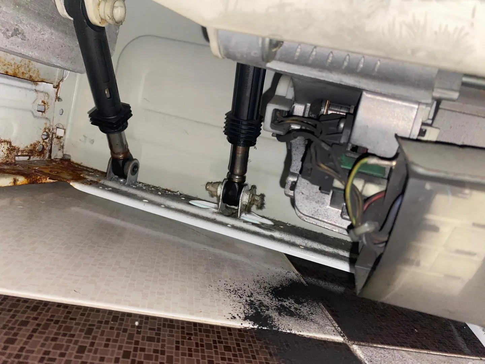
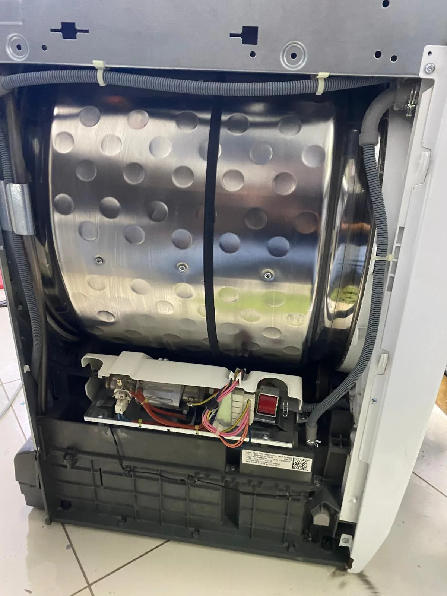
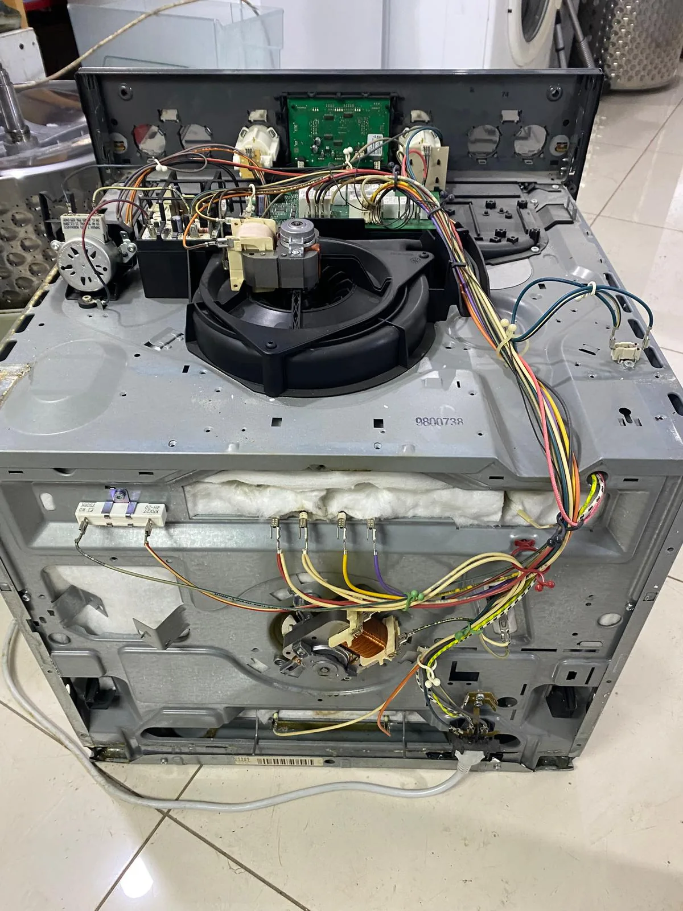

LOCAL SERVICE
Kurtköy Refrigerator Repair
Cooling problems, ice build-up, water leaks and unusual noise.
View service →Kurtköy appliance repair services with English communication for home appliances and technical support. Tell us your appliance type, brand, model and problem in English via phone or WhatsApp.
Select a service below to see the relevant technical support page in English.
Cooling problems, ice build-up, water leaks and unusual noise.
View service →
Water intake, drainage, spin-cycle and door problems.
View service →
Poor cleaning, drainage problems and water leaks.
View service →

Temperature warnings, ice build-up and freezing problems.
View service →
 Illustrative photo · Pexels
Illustrative photo · PexelsCooling, maintenance, water leaks and performance problems.
View service → Illustrative photo · Pexels
Illustrative photo · PexelsHot water, heating, pressure and error-code problems.
View service →Yes. Call +90 542 891 22 25 or message us on WhatsApp in English. Tell us your neighbourhood in Kurtköy and the appliance problem.
Ask about same-day availability when you contact us. We confirm an appointment time based on our schedule and your address.
Share the appliance type, brand, model, symptoms and your neighbourhood in Kurtköy. A photo of the rating plate or error code can help us prepare.
Initial information by phone is free. Inspection and repair are separate services; we explain the proposed work and cost before asking for your approval.
PROFESSIONAL CARE
We explain the diagnosis, proposed work and price before your approval. Replaced parts carry a 1-year warranty. This is separate from the manufacturer’s warranty.
Independent repair service. We are not an authorised service centre for the brands mentioned.
Call or message us on WhatsApp in English. Share the appliance type, brand, model and problem.